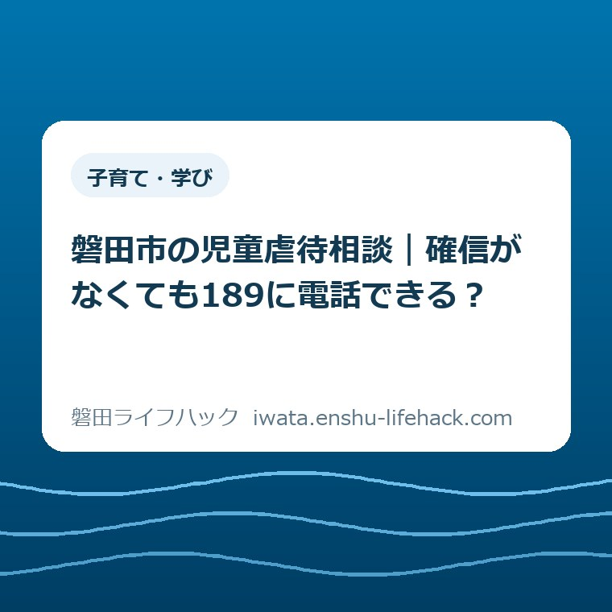
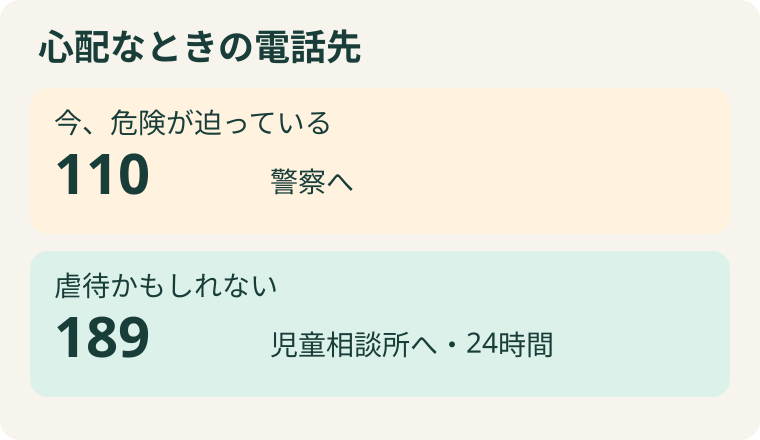
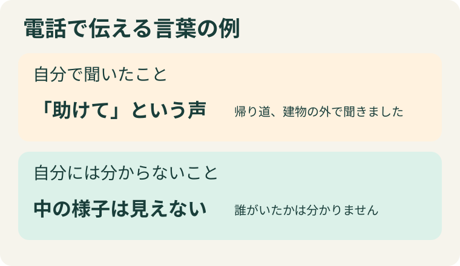

子育て・学び
磐田市の児童虐待相談｜確信がなくても189に電話できる？

この記事の要点
Q. 近所の子が心配です。虐待かどうか確信が持てなくても、電話していいですか？
A. はい。磐田市は、虐待かもしれないと思った段階での相談を呼びかけています。今まさに子どもに危険が迫っている緊急時は警察の110番へ。それ以外で虐待が心配なときは児童相談所虐待対応ダイヤル189へ。24時間受け付け、匿名でも相談できます。
電話先を決めるとき、最初に見るのは今の危険
帰り道で聞いた言葉が、家に着いても耳に残っている。あの子は大丈夫だろうか。自分には聞こえなかった前後のやり取りもある。誰かを傷つけるような決めつけはしたくない。そうやって何度も考え直すだけでも、ずいぶん気力を使います。電話をかけるために、そこで一つの答えまで出す必要はありません。
磐田市の案内で最初に区別したいのは、気がかりの確かさより、目の前の危険です。たとえば今、道路で大人が子どもを殴っていて助けが必要な場面なら、警察の110番です。児童相談所の番号を経由することも、市役所の受付時間を検索することも、先に済ませる手順には入っていません。
一方、昨日聞いた言葉が引っかかっている、少し前に見た様子が心配だというときも、虐待かもしれないと思った段階で189に電話できます。「今は姿が見えない」と「心配する理由が消えた」は違います。最後に自分が見たときの様子まで話し、その後については分からないと伝えられます。
二つの番号は、心配の強さを小・大に分けたものではありません。子どもに直ちに助けが必要なのか、そのときの状況で入口が変わります。身の危険がある場所にとどまり、何が起きているかを見届けようとせず、安全な場所から、今いる場所と目の前の状況を伝えてください。

189にかけると、最初に住んでいる地域を聞かれる
電話をかけたら、知っていることを全部、最初から順に話さなければならない。そう思うと、最初のひと言を決めるだけで疲れてしまいます。実際の189には、話を聞く児童相談所につながる前に、どこの児童相談所が担当するかを確かめる段階があります。まず、この順番を知っておくと戸惑いが一つ減ります。
こども家庭庁によると、2025年12月22日からは、固定電話でも携帯電話でも、コールセンターの担当者が発信者の住む地域を聞き取り、管轄の児童相談所へ電話をつなぎます。最初に地域を聞かれる理由はここにあります。子どものいる世帯の住所を調べ上げた人だけが電話できる、という意味ではありません。
たとえば、自分が住んでいるのは磐田市で、仕事帰りに気になる様子を見たのは別の市だったとします。住んでいる地域を尋ねられたら自宅のある地域を、子どものいた場所を尋ねられたら見かけた場所を答える。二つが違うと最初にひと言添えると、どちらの話をしているかが相手に伝わります。
189の通話料は無料です。こども家庭庁は一部のIP電話からはつながらないと案内しています。発信できないときは、使える携帯電話など別の電話から189をかける方法があります。磐田市の公式ページには県西部児童相談所の昼間と夜間・休日の電話番号も載っています。
名前を伝えることが心配なら、電話の初めに「匿名で相談したいです」と言えます。こども家庭庁は、匿名での通告や相談ができ、連絡した人と内容の秘密を守ると明記しています。居住地域を聞く手順と、名前を明かすかどうかは別の話です。地域を聞かれたところで、切らなくて大丈夫です。
話し始めるときは、見たことを一つ、そのまま
「虐待の相談です」と言い切るのが難しければ、「子どものことで気になることがあります。私に見えた範囲を聞いてください」で始められます。これは話し方の一例です。市や児童相談所が定めた台本ではありません。自分の言葉で始めて、聞かれたことに答えるほうが楽なら、その言い方で十分です。
たとえば「夕方、建物の外で子どもが助けを求める声を聞きました。私は中の様子を見ていません」。この一文で、耳にしたことと、見えなかったことが分かれます。「親がこうしたに違いない」と経緯を埋めなくても、自分の心配の理由は伝わります。今も助けを求めていて緊急なら110番です。
時間についても、時計を見ていなかったなら、「学校の帰り道」「辺りが暗くなる前」と自分が覚えている範囲で。はっきり覚えていない数字を分単位で答えると、後でその数字だけが独り歩きします。「正確な時刻は分かりません」と添えるほうが、聞く人にも情報の確かさが伝わります。
場所はどうでしょう。番地まで知らない通りで見たのなら、「この公園の、遊具がある側の入口」といった目印を思い出せることがあります。住所を確かめようと後を追う必要はありません。反対に、場所もはっきりしなければ、そのことを最初に伝えてください。地図に印を付け終わるまで電話を待つ必要もありません。
身内に聞いた話を伝える場合は、「私が見ました」とは言わず、「子どもが帰ってきてこう話しました。私はその場にいませんでした」と言えます。誰から聞いた言葉なのかが分かれば、相手はどこまでを尋ねればよいか考えられます。聞いた話を自分の目撃談に直す作業は、相談の準備には要りません。

子どもが自分から話してくれたとき
「どうしたの」と声をかけたら、思いがけない話が返ってくるかもしれません。その場で筋道をつけようとすると、「いつもなの」「あの人がやったの」と、大人の側が答えを用意した質問になりがちです。私なら、まず「話してくれてありがとう」と伝えて、子どもが自分で使った言葉を大切にします。
ここでの記事の役割は、聞き取り調査の方法を教えることではありません。通りがかった人や近くに暮らす人にもできることは、既に聞いた言葉を、相談先へできるだけそのまま渡すことです。一度聞けたことを、別の人の前でもう一度話してもらい、話が合うか試す必要はありません。
「誰にも言わないで」と言われたら、守れるか分からない約束で安心させたくなるかもしれません。私は、「あなたが安全に過ごせるように、助けてくれる人に相談するね」と、これから自分がすることを短く伝える言い方を選びます。子どもに電話の決断を背負わせず、大人が相談先につなぐためです。
相談相手の範囲も大事です。家族のグループチャットに子どもの顔や住まいが分かる写真を載せて意見を募れば、その後、誰が見るかを本人も送った人も選べません。地域の人に広く見てもらう前に、秘密を守って話を受ける専門の窓口へ。心配する人を増やすことと、必要な相手に伝わることは別です。
市の二つの案内で、どこを読めばよいか
磐田市の「児童虐待」を開くと、最初に虐待の種類が並び、その下に相談窓口が載っています。種類の説明は、どんな行為が子どもを傷つけるかを知る手がかりです。自分で四つのどれかに分類できて初めて窓口を使える、という並びではありません。急いで連絡先を見たいときは「相談窓口」の見出しへ進めます。
気づきにくいのは、子ども自身に向けられた暴力だけが記載されているわけではないことです。市は、子どもの目の前で家族に暴力をふるうことも心理的虐待の例に挙げています。「子どもはそばにいただけ」と、見たことから子どもの存在を落とさず、どこにいて何を見聞きしていたか、分かる範囲で伝えてください。
一方で、その家の暮らしぶりについて周りが抱いた印象だけを、虐待の根拠のように話すのは避けたいものです。家族の働き方、経済状態、ひとり親かどうかといった属性から、子どもの安全は判断できません。「どんな家庭と思ったか」を足すより、「何を見て、その子の何が心配になったか」に戻れます。
市内のこども若者家庭センターに連絡したい場合、市「児童虐待」に掲載された相談番号は0538-37-2018で、掲載の受付時間は月曜から金曜の午前8時30分から午後5時15分です。夜になって窓口の案内を見つけたとしても、それだけで翌日まで待つことにはなりません。189には24時間、電話できます。
もう一つ、市の「こども相談」には、18歳未満の子どもの家庭生活やしつけ、学校生活、虐待や養育上の悩みを相談できる「こども相談ダイヤル」があります。こちらは0538-35-4317、祝日を除く月曜から金曜の午前8時30分から午後5時までです。同じセンターの案内でも、番号と終了時刻は同一ではありません。
たとえば保護者自身が「子どもにきつい言い方をしてしまう。普段の接し方を聞いてほしい」と思った段階でも、市の相談内容に含まれます。この記事を読んでいる人が当事者でも、近くで気にかけている人でも、すべての番号に順に連絡する必要はありません。今まさに危険なら110番、虐待かもしれないという心配なら189が入口です。
11月のオレンジリボンを、暮らしの中でどう受け取るか
磐田市が紹介しているオレンジリボンの取り組みは毎年11月です。市のページの更新日は2024年11月7日。これは2026年11月に新しい相談窓口ができた、という発表ではありません。以前からある番号を、この秋、気になっていたことを話すために使えると知る機会です。
もちろん、連絡できる期間が11月だけという意味でもありません。掲示を見かけたのが11月でも、気になった出来事は少し前ということがあります。電話するときに時期を今月に合わせて言い換えず、「見たのは先月です」「その後は会っていません」と、出来事と今の距離をそのまま伝えられます。
啓発の言葉は、一人ひとりが「早期発見」を成し遂げなければ、と読めることがあります。私は、その受け取り方では近くにいる人の荷物が重すぎると思います。見守る人全員が専門知識を持つのは難しい。それでも、家の外から見えた小さな範囲を、守秘のある相手に話せることには意味があります。
良い点と、案内に注文したい点
市の案内の良い点は、学校や園のように子どもと関わる機関と並べて、地域の人からの相談にも触れていることです。子どもと血縁がない、担任でもない。そういう立場の人にとっては、自分もこの案内の読み手だと分かるだけで、ページを閉じる前に電話番号へ目が届きます。
もう一つ、緊急時の110番が189と同じ「相談窓口」の見出しにあることは見落とせません。相談という題名を見てページに入った人にも、目の前の危険には警察へ連絡できると分かります。小さな画面で窓口名を一つずつ調べているとき、同じ箇所にあることで検索のやり直しを一回減らせます。
注文したい点は、電話をためらう人が最も気にする「何と言えばいいか」に、番号と同じくらい目が届くようにしてほしいことです。制度名を知っている人にも、自分のあいまいな記憶をどう伝えるかは別の難しさがあります。「聞こえたことは話せますが、中は見ていません」という一例が番号のそばにあるだけで、かけ始めやすくなると思います。
大石の視点と対案・結論――準備で電話を遅らせない
段取りを考えるとき、必要な書類や写真をそろえるのが役に立つ場面は確かにあります。ただ、この電話でその習慣をそのまま当てはめると、「証拠を用意してから」と一番大切な連絡が後ろに回ってしまう。私は、相談に進むための条件を、案内する側が勝手に増やしてはいけないと思います。
私にも、具体例はどこまで書けばよいかという迷いがあります。例が一つもなければ言葉が出てこない。一方で、声の大きさや回数まで例示すれば、その数に達するまで連絡できないと読めてしまう。だからここでは、何回、何分という線引きを作らず、自分の見聞きした範囲を話す例だけを挙げました。
たとえば電話の横に紙があって、言葉に詰まりそうなら、「帰り道」「子どもの声」「室内は見えない」と三つ書く程度でも、自分が何を伝えたかったかを思い出せます。これは人に提出する記録ではありません。紙がないときはそのまま電話してください。差し迫った危険がある場面で、メモを優先する理由はありません。
話し終えた後のことについても、この記事から「必ずいつ訪問する」「こういう処置になる」とは言えません。電話をした人に見えている範囲と、相談を受けた先で個別に判断することは分かれています。近所で対応を確かめようとしたり、子どもに何を話したか尋ねたりせず、自分から広げる情報はそこで止めておけます。
磐田で身近な子育ての場を探す人には、磐田市の子育て支援センター｜利用登録統一とはの案内もあります。暮らし全般の悩みを家族の立場で尋ねたいときには、磐田市くらしと仕事相談センター｜家族だけでも相談できる？で扱う相談があります。子どもが暮らす家庭を支える別の仕組みについては、磐田市の里親制度とは｜10月に知る家庭の支えで説明しています。どれも、目の前の危険を知らせる電話の前に済ませる手続きではありません。
よくある質問
子どもの名前を知らなくても相談できますか？
磐田市は、地域の人が虐待かもしれないと思った段階で相談するよう案内しています。名前を確かめに出向くより、189に「名前は分かりません」と伝え、知っている場所や見聞きしたことを話してください。緊急時は110番です。
匿名で相談したいのに、住んでいる地域を聞かれるのはなぜですか？
189は全国共通の番号です。こども家庭庁によると、担当の児童相談所につなぐため、オペレーターが電話をかけた人の居住地域を聞き取ります。匿名でも相談でき、相談した人と相談内容の秘密は守られます。
夜間に気づいたら、市役所が開くまで待ちますか？
189は24時間受付です。平日の日中まで待つ必要はありません。子どもへの暴力が今まさに目の前で起きているなど、緊急時は警察の110番へ。時間帯で番号を分けるより先に、今すぐ助けが必要な状況かを考えてください。
今日できる一歩
今、虐待かもしれないと気になっていることがあれば、見聞きしたことを一つ、そのまま189に伝えてください。緊急時は110番です。窓口と受付時間の最新の案内は、磐田市公式の「児童虐待」の相談窓口で確認できます。
参考にした公式情報
- 磐田市「児童虐待」（2026年11月5日確認）
- 磐田市「こども相談」（2026年11月5日確認）
- こども家庭庁「児童相談所虐待対応ダイヤル『189』について」（2026年11月5日確認）
最終確認日：2026-11-05 ／ 本記事は公表情報と執筆者の見解を分けて記載しています。制度・数値・公開状況は変更される場合があるため、最新情報は磐田市公式ページでご確認ください。